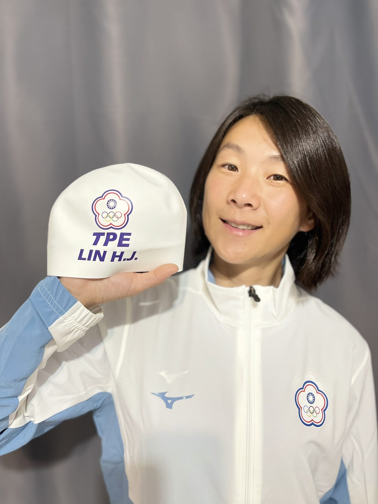
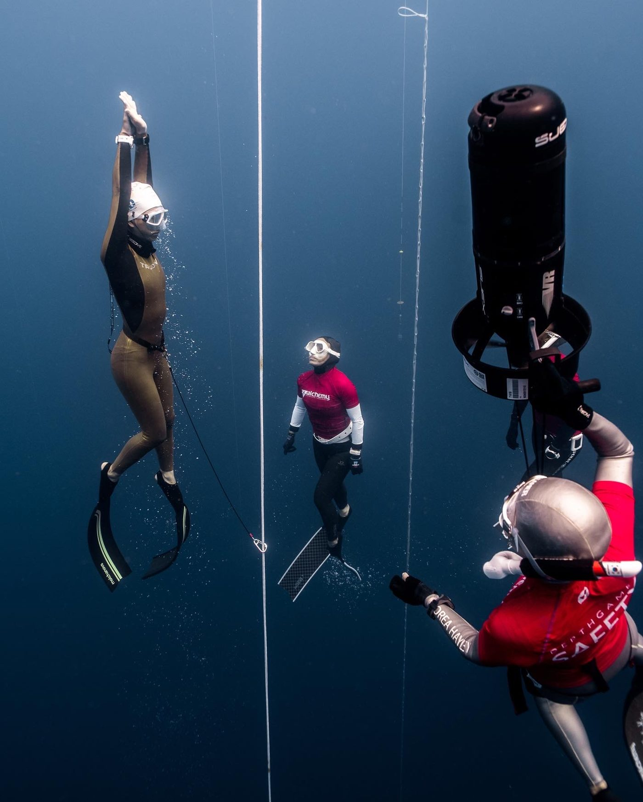

01我的故事
接觸
最早接觸這項運動是在2018年，因緣際會開始熱衷海上運動，激發了想一探究竟的好奇心，就此投入至今，近三年進步快速並在國內嶄露頭角，多次獲得台灣紀錄保持與前三名成績，今年世錦賽排名前進13名，有望成為2026年世錦賽中華代表隊成員之一。


最早接觸這項運動是在2018年，因緣際會開始熱衷海上運動，激發了想一探究竟的好奇心，就此投入至今，近三年進步快速並在國內嶄露頭角，多次獲得台灣紀錄保持與前三名成績，今年世錦賽排名前進13名，有望成為2026年世錦賽中華代表隊成員之一。


歷屆成績 · 更新於 2025/07/22
AIDA Pool World Championship Jeju 2023 - Day 1: DYNB
AIDA Pool World Championship Jeju 2023 - Day 2: DNF
AIDA Pool World Championship Jeju 2023 - Day 3: STA
Freediving - CMAS World Championship Indoor 2024 Belgrade - Day 1 Highlights
訓練與參賽計畫
1.訓練計畫
基礎訓練：泳池與海訓、體能維持、重量訓練、體內外柔軟度拉伸、飲食調
整、體態控制
賽前訓練：二氧化碳耐受度、Packing、Mouthfill、超呼吸、運動姿勢調整、
耳壓平衡技巧、模擬意象訓練
比賽期間：專注賽前飲食與作息控制、針對競賽節奏進行適當訓練與休息安排
預計進行移地訓練地點：菲律賓、小琉球、蘭嶼
2.競賽計畫
預計將參與
2025 Cmas 自由潛水室內世錦賽
2025 Cmas World Cup Freediving indoor Kaohsiung
2025 PRC 環太平洋自由潛水泳池賽
2025-2026 Cmas全國自由潛水室內錦標賽
2025-2026 Cmas全國自由潛水室內菁英賽
此外也會參與臺灣舉辦之各大競賽：環太平洋自由潛水泳池賽、意潛mini賽、花春盃泳池賽、幸福杯、臺灣盃深度賽維持競賽狀態以及能力
(一) Cmas 世錦賽項目4強
(二) Cmas 全國自由潛水室內錦標賽奪牌或破國家紀錄-達標隔年世錦賽資格8強
(三) Cmas 全國自由潛水室內菁英賽奪牌或破國家紀錄-達標隔年世錦賽資格8強
(四) Cmas世界盃項目4強
我想達到…
基礎訓練：泳池與海訓、體能維持、重量訓練、體內外柔軟度拉伸、飲食調整、體態控制
賽前訓練：二氧化碳耐受度、Packing、Mouthfill、超呼吸、運動姿勢調整、耳壓平衡技巧、模擬意象訓練
專注賽前飲食與作息控制、針對競賽節奏進行適當訓練與休息安排
自主自律維持，基礎體能訓練持續
針對自由潛水項目進行心肺能力運動訓練，加強大小腿部肌力、二氧化碳耐受力、上半身划水動力、全身協調性訓練為主要項目。
自由潛水除了基本運動技術之外，特別需應用專項運動技術及比賽專項動作訓練；基本採用全訓法、意象訓練法、陸地閉氣二氧化碳耐受訓練、轉身動作、單雙蹼踢蹼動作訓練、距離感知訓練、裸眼耐受訓練…等。
自由潛水項目無戰術基礎，以自身的體能極限挑戰作為最終結果，唯一在賽場上可能的戰術就是將預報成績報高，獲得其他選手成績後以此為目標積極突破。
以日常生活自律為主軸，加強心理建設，忍耐力、運動精神力，將心裡目標強化並集中精神，同儕訓練增進精神力的赤昂磨練。
需求項目與數量（依官方頁面）
| 運動防護費 | NT$ 120,000 |
| 訓練器材裝備費 | NT$ 100,000 |
| 選手零用金 | NT$ 120,000 |
| 參賽報名費 | NT$ 75,000 |
| 參賽旅運費 | NT$ 200,000 |
| 移地訓練費 | NT$ 200,000 |
| 移地訓練費 | NT$ 36,000 |
| 經費需求合計 | NT$ 851,000 |
| 蛙鞋 | 21 |
| 鼻夾 | 21 |
| 潛水錶 | 21 |
標示「不公開」者為官方頁面未揭露之欄位。
網路公開搜尋結果，均附原始出處
申請者於體育署捐贈媒合平臺自填的相關連結。
出處：https://www.facebook.com/photo/?fbid=831076668375533&set=pcb.831085555041311協會介紹2022 AIDA泳池世錦賽台灣隊選手林昕儒，2018年開始學習自由潛水。
出處：https://www.facebook.com/tfda.freediving/posts/129277459781607/潛店教練介紹頁，林昕儒身兼水肺潛水與自由潛水教練。
出處：https://oceankeepdiving.com/coaches